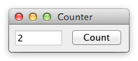

===================================================================================================================================================================
Challenge
Understanding the basic ideas of a language/toolkit.
Criteria
- Build a frame containing a label or read-only textfield T and a button B.
- Initially, the value in T is 0.
- Each click of B increases the value in T by 1.
Counter serves as a gentle introduction to the basics of the language, paradigm, and toolkit for one of the simplest GUI applications imaginable. Thus, Counter reveals the required scaffolding and how the very basic features work together to build a GUI application. A good solution will have almost no scaffolding.

Code
After opening a code link below, hit the '.' key to open GitHub's browser editor for an improved reading experience.